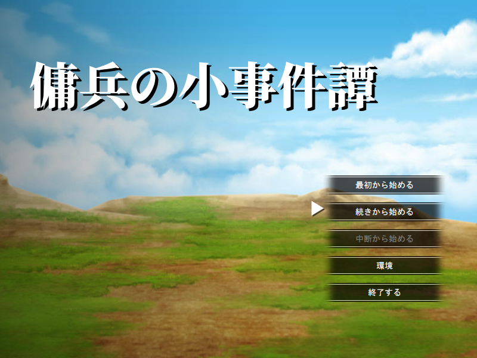
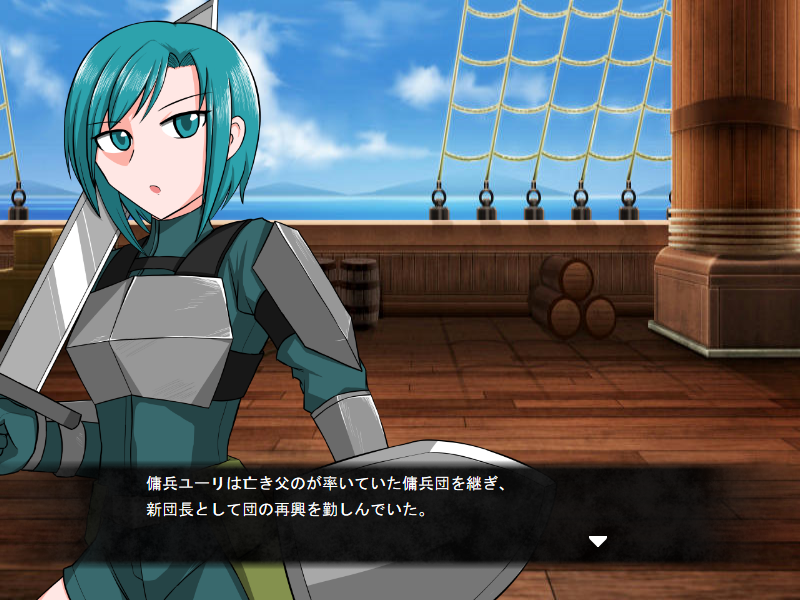
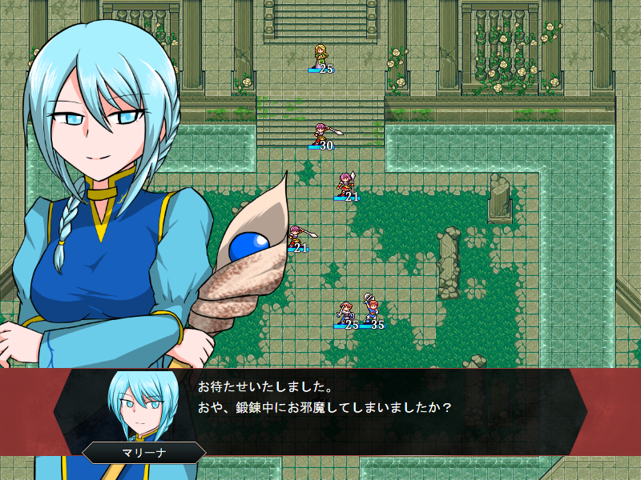
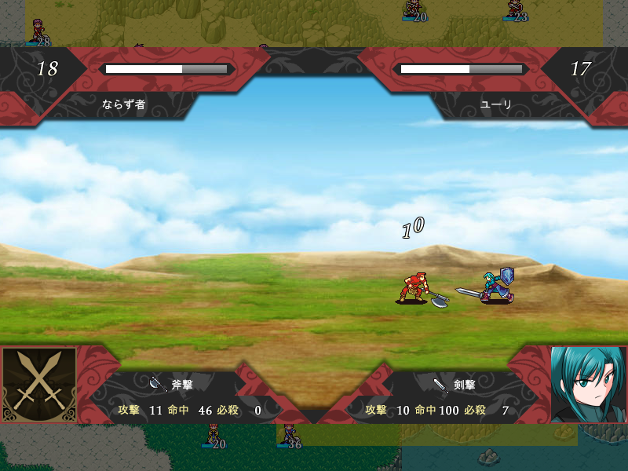
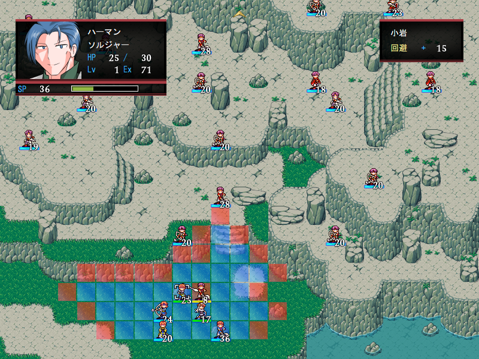
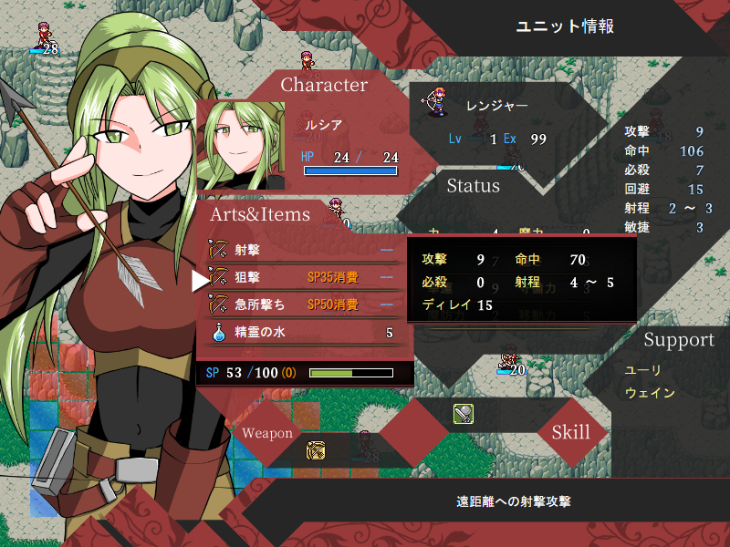

ストーリー
亡き父の後を継ぎ、傭兵団長となった少女ユーリは
神秘の残る地「ネイチュリア」の神官から、
ある場所を荒らす者たちの討伐依頼を引き受ける。






傭兵の小事件譚は、シミュレーションRPG制作ツール「SRPG Studio」で作成されたフリーゲームです。
全部で4つのマップの短編で、ゆっくりじっくりプレイできるノーマルモードと、
キャラロスト（※）あり、エンディングまでセーブ不可（中断は可能）のチャレンジモードがあります。
どちらのモードでも30分～1時間半程度でクリアできますので暇つぶしには最適です。
また、本作では武器攻撃では耐久性ではなく、SP（スキルポイント）システムを採用しており、
攻撃を当てたり、ダメージを受けることでSPゲージが蓄積、それを消費することで、
特殊な技や必殺攻撃を使用することが出来ます。
特殊技を駆使し、傭兵達を上手く操作し、迅速に任務を成功させ、
より多くの報酬を得られるようにプレイしましょう。
※・・・ユニットのHPが0になることによる永久離脱
亡き父の後を継ぎ、傭兵団長となった少女ユーリは
神秘の残る地「ネイチュリア」の神官から、
ある場所を荒らす者たちの討伐依頼を引き受ける。
タイトル：傭兵の小事件譚
ジャンル：シミュレーションRPG
プレイ人数：1人
動作対象OS：Windows10/8/7/Vista SP2
ゲームデータ容量：161MB程度
対象年齢：全年齢